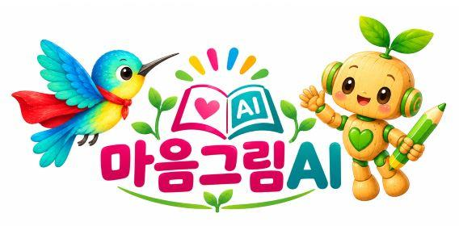
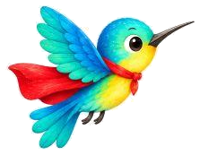

아이의 마음을 그림으로
그림 속 이야기를 부모와 함께

실제 이름 대신 가명을 적어 주세요. 비워 두면 '친구'라고 부릅니다.
보호자 안내 · 적은 내용은 저장하거나 보내지 않습니다
시연용 화면입니다. 적은 내용과 사진, 목소리는 이 기기에서만 잠깐 보이거나 들릴 뿐 어디에도 저장하거나 보내지 않습니다. 새로고침하면 모두 지워집니다.
AI 대화 기능 시연 예시질문이 미리 정해 둔 순서대로 나오는 화면입니다. 실시간 AI는 연결되어 있지 않습니다.
루미와 이야기

아이의 말을 그대로 받아 적거나 목소리로 남겨 주셔도 됩니다.
카메라로 그림을 비추면 캐릭터가 나타나는 실제 AR입니다. 지금은 시험판이라 로고를 비추면 토리가 나옵니다.
AI 대화 기능 시연 예시질문이 미리 정해 둔 순서대로 나오는 화면입니다. 실시간 AI는 연결되어 있지 않습니다.
토리와 마음색 고르기

색을 눌러 봐. 여러 개 골라도 돼.
아이의 말을 그대로 받아 적거나 목소리로 남겨 주셔도 됩니다.
AI 대화 기능 시연 예시질문이 미리 정해 둔 순서대로 나오는 화면입니다. 실시간 AI는 연결되어 있지 않습니다.
마음그림 올리기
네 마음을 그림으로 그려 볼까?하트를 칠해도 좋고, 그리고 싶은 모습을 그려도 좋아.
사진은 이 화면에서만 보이고 어디로도 보내지 않습니다.
그림 속에 누가 있니?
안 적어도 괜찮아. 목소리로 들려줘도 돼.
이 그림에 제목을 붙여 볼까?
오늘의 마음그림
아이가 고른 색
아이가 고른 색을 그대로 보여 드립니다. 색마다 정해진 뜻은 없으니 왜 골랐는지는 아이의 말로 들어 주세요.
아이가 한 말
공감 대화 TIP
- 감정 인정하기아이가 한 말을 그대로 받아서 마음을 짚어 주세요.예) “동생이 장난감을 가져가서 속상했구나.”
- 바라는 도움 묻기그때 어떤 도움을 바랐는지 물어봐 주세요.예) “그때 엄마가 어떻게 해 주었으면 좋았을까?”
- 함께 해결 방법 찾기다음에 비슷한 일이 생기면 어떻게 할지 함께 정해 보세요.예) “다음에 또 그러면 어떻게 하면 좋을까? 같이 생각해 보자.”
아이가 바로 대답하지 않으면 기다려 주시거나 다음에 다시 물어보셔도 됩니다. 이야기를 마칠 때는 “네 마음을 이야기해 줘서 고마워.”라고 말해 주세요.
아이와 함께 보는 마무리 인사
토리 네 마음그림도 정말 소중해. 다음에 또 만나자!